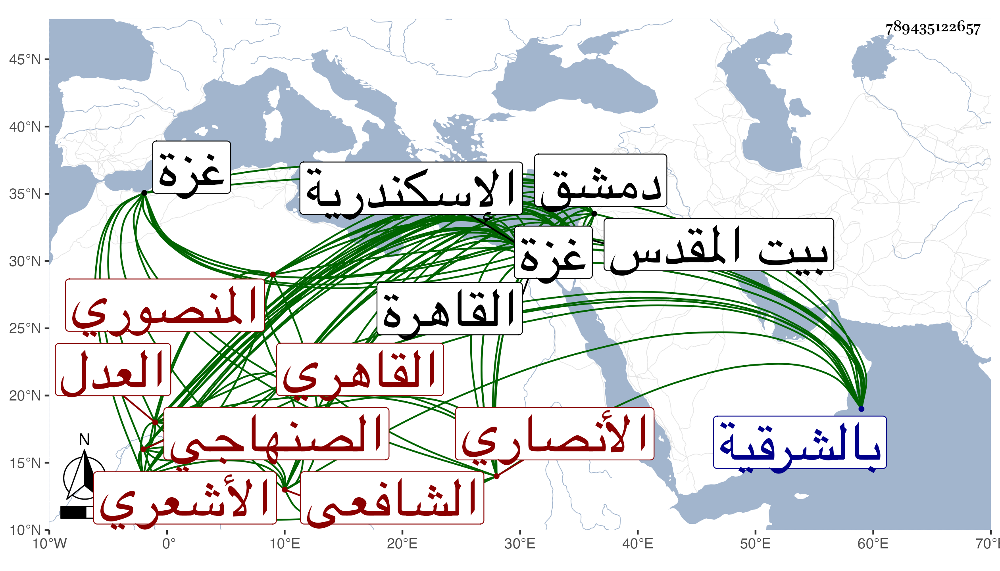

0902Sakhawi.DawLamic.ITO20230111-ara1.EIS1600.789435122657
Biography ID: 789435122657
إبراهيم بن خليل بن إبراهيم بن محمد بن إسماعيل برهان الدين الأنصاري الصنهاجي الأصل المنصوري نسبة للمنصورة بالشرقية ثم القاهري الشافعي الأشعري العدل بالرخاصي . ولد تقريبا سنة خمس وسبعين وسبعمائة وقيل سنة تسعين وبينهما بون كبير والثاني أشبه بالمنصورة وحفظ القرآن ثم انتقل إلى القاهرة في سنة خمس وثمانمائة فحفظ العمدة والمنهاجين الفرعي والأصلي وألفية ابن مالك وأقبل على الاشتغال فتلا لأبي عمرو علي الزراتيتي وأخذ الفقه عن البيجوري والأدمي والشمس العراقي والولي العراقي وآخرين والفرائض والحساب بأنواعه عن الشمس العراقي وابن المجدي وعنه أخذ علم الوقت والنحو عن الشمس الشطنوفي والبرماوي وغيرهما والأصول عن الفتح الباهي الحنبلي والشهاب العجيمي والتصوف والأصلين عن العلاء البخاري والجلال الحلواني بل بحث في فقه الحنفية علي ناصر الدين الأياسي بغزة قرأ عليه بعض المختار وفي نظم طاهر بن حبيب لكتاب الكامل لابن الكشك وأقرأ ذلك بها وتردد إلى دمشق وحضر دروس مشايخها كالشمس بن العيار في النحو والشمس الكفيري وغيره في الفقه وزار القدس والخليل وحج سنة خمس وعشرين ودخل الاسكندرية وأخذ بها الفرائض عن دحيبات ودمياط وغيرهما وهو ممن سمع على الشرف بن الكويك والجمال الحنبلي والولي العراقي وآخرين وأجاز له عائشة ابنة عبد الهادي وخلق باستدعاء شيخنا أبي النعيم وكان إماما فاضلا مشاركا في فنون بارعا في الفرائض والحساب مباركا عدلا ثقة ساكنا متكسبا بالشهادة حدث باليسير وكنت ممن قرأ عليه بعض الأجزاء . ومات في رجب سنة ست وخمسين بالقاهرة بعد أن كف ووقف كتبه وأوصى بجهات خير رحمه الله وإيانا .
